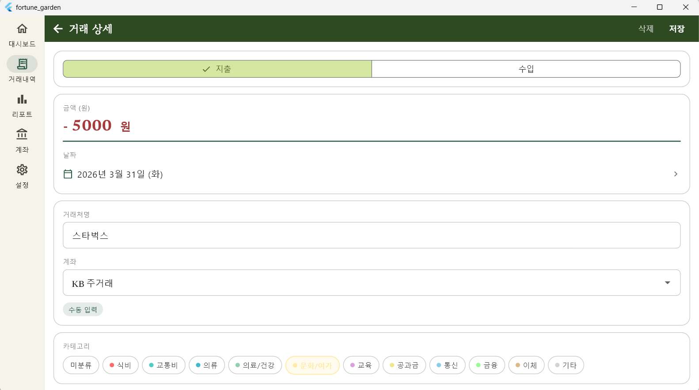
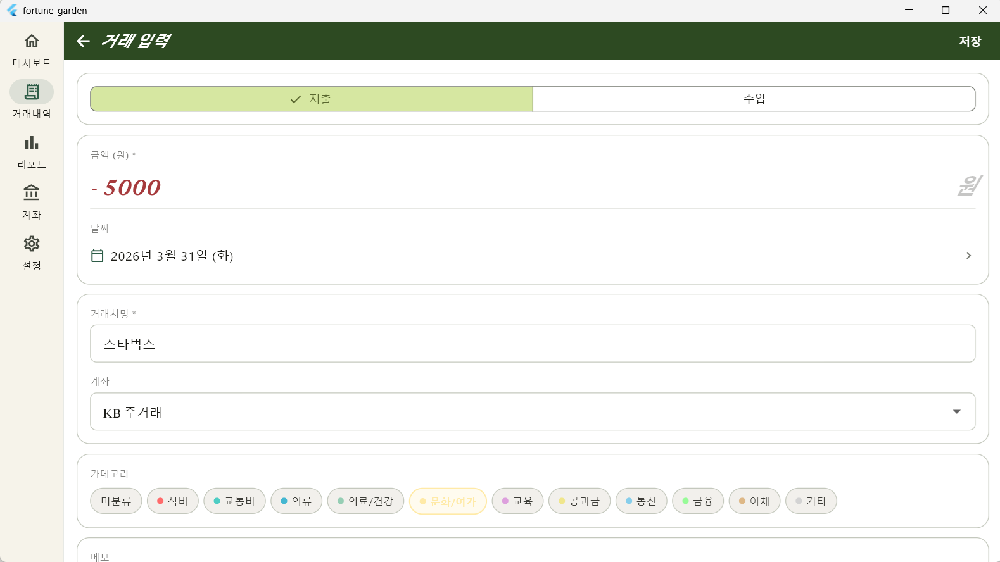

Screen Update
SCR-004 · 거래 상세/수정

수동 거래와 CSV 거래의 수정 범위를 현실화하고, 카테고리 선택 UX를 계층 구조로 개선하였습니다.
기능 변경 내역
Part D — Session Worklog
세션 작업 내역 요약
| 작업 구분 | 대상 파일 | 변경 내용 |
|---|---|---|
| UI 리뉴얼 | transaction_detail_screen.dart |
SCR-004 거래 상세 화면 전체 재작성 및 계층형 카테고리 UI 적용 |
| 기능 고도화 | transaction_new_screen.dart |
SCR-005 수동 입력 화면 유효성 검사 강화 및 헤더 저장 로직 구현 |
| 도메인 확장 | transaction_use_case.dart |
CSV 거래처명 수정을 위한 updateMeta 메서드 파라미터 추가 |
| 라우팅 수정 | app_router.dart |
정적/동적 경로 선언 순서 조정을 통한 경로 탐색 버그 해결 |
| 버그 수정 | transactions_screen.dart |
화면 전환 시 context.push 경로 문자열 보간 오류 수정 |
| 현지화 적용 | app.dart |
flutter_localizations 설정 및 한국어(ko_KR) 로케일 전역 적용 |
주요 구현 상세: _CategorySelector
// parentId 기준 트리 빌드 로직 Map<int?, List<Category>> _buildCategoryTree() { final map = <int?, List<Category>>{}; for (final c in _categories) { map.putIfAbsent(c.parentId, () => []).add(c); } return map; }
- 최상위(Parent): 색상 도트(8px)와 기본 폰트(13px) 적용
- 하위(Child): 작은 점(3px)과 작은 폰트(12px) 적용
Screen Update
SCR-005 · 수동 거래 입력

입력 유효성 검사를 강화하고, 저장 버튼의 위치를 헤더로 이동하여 입력 접근성을 높였습니다.
- 유효성 검사: 거래처명 미입력 및 금액 0 이하 시 필드 하단 에러 메시지 즉시 표시.
- 계좌 예외 처리: 등록된 계좌가 없을 경우 드롭다운 대신 안내 문구("계좌 관리에서 먼저 추가해 주세요")를 출력합니다.
-
디자인 통일: SCR-004와 동일하게
_SectionCard및_FieldLabel패턴을 적용하여 시각적 일관성을 확보했습니다. -
Material3 대응:
surfaceVariant(deprecated)를surfaceContainerHighest로 교체하였습니다.
Logic & Routing
도메인 및 로직 변경 사항
transaction_use_case.dart
CSV 거래에서도 거래처명(Merchant)을 수정할 수 있도록
updateMeta 파라미터를 확장하였습니다.
// 변경 후 인터페이스 Future<void> updateMeta({ required int id, String? merchant, // 추가됨 int? categoryId, String? memo, })
app_router.dart
정적 경로(new)가 동적 경로(:id)보다 먼저 평가되도록 선언 순서를 수정하여 라우팅 버그를 해결하였습니다.
// 정상적인 라우트 배치 routes: [ GoRoute(path: 'new', ...), // 1순위: 정적 경로 GoRoute(path: ':id', ...), // 2순위: 동적 파라미터 ]
Environment
Localization 및 환경 설정
사용자 편의를 위해 앱 전반에 한국어 로케일을 적용하였습니다.
-
Locale 설정:
Locale('ko', 'KR')를 기본 지원하며, DatePicker 등에 한국어 요일/달력이 표시됩니다. -
App.dart 수정: 로딩, PIN 잠금, 메인 앱 세 곳의
MaterialApp에localizationsDelegates를 동일하게 적용했습니다.
Modified Files
수정된 파일 목록
| 파일 경로 | 작업 구분 | 변경 유형 및 상세 |
|---|---|---|
presentation/screens/transactions/transaction_detail_screen.dart
|
Refactoring | 화면 전체 재작성 및 수동/CSV 수정 로직 분리 |
presentation/screens/transactions/transaction_new_screen.dart
|
Refactoring | 화면 전체 재작성 및 입력 유효성 검사 추가 |
application/transaction/transaction_use_case.dart
|
Logic | updateMeta 파라미터 추가 (merchant 필드 지원) |
presentation/router/app_router.dart |
Routing | 라우트 선언 순서 수정 (정적 경로 우선 순위 적용) |
presentation/screens/transactions/transactions_screen.dart
|
Bug Fix | context.push 경로 문자열 보간 버그 수정 |
app.dart |
Config | Localization 설정 및 다국어 지원 델리게이트 추가 |
Comments